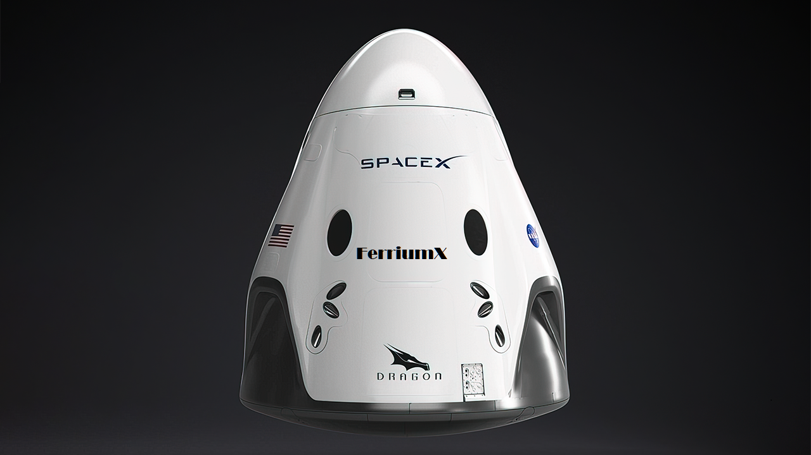

Hyperblog
Tu blog de cabecera
Este es el título atractivo e interesante del post

Y este es el párrafo de inicio donde vamos a explicar las cosas increìbles que se pueden hacer con ramas
Los blogs son la mejor forma de compartir información y tus ideas. Mucho mas que ir a conferencias o salir en Youtube. Excepto si eres un rockstar. Pero estadísticamente no lo eres.... por ahora.
Suscribete y dale like